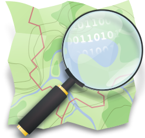

- Mobile Data Collection
- Smartphone & GPS Basics
- CaerusGeo
- Phone Setup (PDF)
- Phone Management (PDF)
- Fulcrum Online Walk Through (PDF)
- Collecting Data with Fulcrum (PDF)
- Fulcrum Management (PDF)
- CaerusGEO (PDF)
- Troubleshoot Bluetooth (PDF)
- GeoJson to Shapefile (PDF)
- Download OSM Data (PDF)
 Fulcrum
Fulcrum Fulcrum App
Fulcrum App- Bluetooth GPS
 GPS Essentials
GPS Essentials- CaerusGeo
- Open Street Map
- GeoJson to Shapefile
- Dale Kunce, Senior Geospatial Engineer
- Robert Banick, Field GIS Coordinator
- Emma Folkman, Systems Administrator
 Download ZIP File
Download ZIP File View On GitHub
View On GitHub
Mobile Data Collection
Presentation and Training Materials
Overview
The GIS office at American Red Cross is deeply involved in international disaster response and disaster preparedness programs throughout the world. We are encouraging Red Cross Societies in countries around the globe to take advantage of mobile technology to improve the accuracy and quality of surveys establishing baseline and monitoring data. This will improve the quality and efficiency of programs.
The training materials and links on this site are targeted for survey managers and enumerators. Most of the materials can be translated using Google Translate into many different languages.
Fulcrum
Fulcrum is a mobile data collection platform for survey data. Fulcrum pulls surveys created via an online interface to smartphones or tablets for offline collection in the field. Survey managers push collected data back up to internet database, where Quality and Learning (Q&L) staff can analyze, correct and download survey data in near real time.
CaerusGeo
CaerusGeo drastically simplifies GIS data collection for Red Cross projects. Volunteers and staff can create GIS data with nothing more than pen and paper. Users draw important features on paper and note additional attributes on an accompanying spreadsheet; when Red Cross staff later enter data through the simple web interface, it's automatically transformed into usable data for GIS staff.
GPS Essentials
GPS Essentials is the smartphone app recommended by the GIS team for GPS data collection on mobile phones. GPS Essentials is a smartphone based alternative to traditional standalone GPS devices. Use GPS essentials to mark waypoints or record lines tracking your movement. This can be very useful when mapping project sites with poor or nonexistent maps; it's also a great way to map roads as you drive. GPS Essentials is especially helpful when you don't have enough standalone GPS devices to do the job, or where additional technology would be cumbersome.
Open Street Map
Open Street Map (OSM) OpenStreetMap is a free worldwide map. The data is free to download and use under its open license. Anyone can contribute to the map. The Humanitarian Open Street Map Team (HOT) is a major contibutor to basemap data in Haiti and throughout the world.
Phone Setup
Charge the phone to at last 50% before beginning setup.
If your phone is new, go through the standard installation dialogue.
Select the language you want and link to the local wireless network.
When ready, launch Google Play. If this is your first time using Google Play, it will ask you to create an account. Use the following account:
- Username: amcross.01@gmail.com
- Password: amcross01
When logged in, install the following 4 apps:
- Fulcrum
- BlueTooth GPS
- GPS Essentials
- Application Protection
The apps are used for the following:
- Fulcrum is used for surveying and mobile data collection
- BlueTooth GPS is used to connect to external GPS units
- GPS Essentials is used to collect GPS points and tracks
- Application Protection is used to manage enumerator’s access to apps and the internet
Each app will need to be set up accordingly:
- Fulcrum: Login using the standard enumerator account and sync in the most recent forms.
- Bluetooth GPS: Go to the Settings menu, and check “Use Insecure Connection”, Connection Workaround” and “Other Workaround”
- GPS Essentials: Go to Settings, and set Waypoint Overwrite Distance to 0.\
- Application Protection: Set up a passcode. Use the same passcode for every phone.
Phone Management
Charge your phone and all spare batteries each night.
Label every phone with a number and each battery according to those numbers. So phone 10 would have batteries 10a, 10b, and 10c.
Label each GPS with a number. Pair GPS with like-numbered phones.
Distribute phones, GPS and batteries in waterproof, zippable plastic bags.
Assign each volunteer one phone number for the duration of the training. Maintain a spreadsheet database tracking which volunteers have which phones.
Sync your Fulcrum forms at predetermined intervals (e.g. after every night of fieldwork, after every week of fieldwork).
Fulcrum Management
Make a paper copy of your survey form prior to entering it into Fulcrum. Use this as a guide when entering and a backup in the field in case of severe phone issues.
Triple test your form on the phones before sending it out to the field. It needs to be extremely tight: survey design problems likely cannot be corrected during the course of the day.
Assign everyone associated with a given baseline to one of the 5 Fulcrum accounts you maintain and provide them the appropriate login details.
Assign surveys and offline maps to appropriate accounts ahead of time.
Make all surveys that you don’t want seen inactive or unassigned to the appropriate accounts.
Troubleshooting Bluetooth
Tips for troubleshooting the bluetooth GPS and moble phone connection.
- Check to make sure the GPS is on
- Check to make sure the GPS is connected to satellites
- Is the green light solid? If it’s blinking, go to an open space and wait for the green light to turn solid
- Check to make sure the GPS is connected in Bluetooth GPS
- If not, find an internet connection and logout/login to Fulcrum
- If you have no internet connection, skip to the next step
- Restart your phone
- Your GPS will remain paired. Reconnect using the Bluetooth GPS app
- If you can’t connect with the Bluetooth GPS, set aside the GPS for now
- Use your paper printout to mark where your survey is taking place
GeoJson to Shapefile
Tips for converting geojson to shapefile
- Download and install a text editor such as Notepad++
- Open your GeoJson in Notepad++
- Copy the text that appears
- Go to ogr2ogr web client
- On the right side you’ll see an option for “Convert from GeoJson”
- Paste the text in the “GEOJSON” text space
- Give your file a name in the “Output Name” text space
- Click “Convert to Shapefile”
- Your file will download to your Downloads folder
Download OSM Data
Tips for downloading data from HOT Exports.
- Go to HOT Exports and login
- If you don’t have an account already, create one
- Create a New Job, or use one you’ve already created
- Name your job
- Give it a description that makes sense to others
- Zoom into the area of the map that you want to download
- Click “Select Area” and draw a box around the area you want to download data from*
Careful: If you select a giant area, you may overload the server. Do big downloads in pieces, if necessary - Click “Save”
- If you want to filter information, select the appropriate preset file from “Select Preset File"
- If you don’t know what this means or don’t want to filter information, click “Save”
- Wait for the server to process your export
- When the export is ready, you should see 8 different types of files you can download under “Runs”
- Select the file type you want. Usually this will be “ESRI Shapefile”
- The data will download as a ZIP file
- Extract the data from the ZIP file. You will have a separate shapefile for the points, lines, polygons, and roads. You can now use this data in desktop GIS software like QGIS